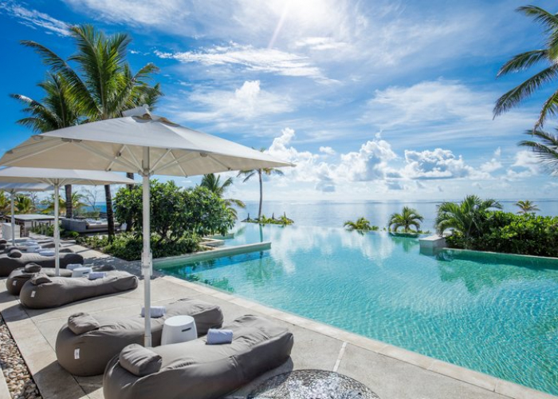
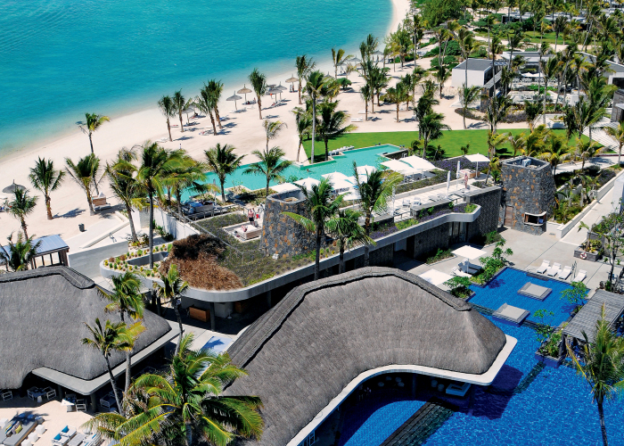

Mauritius, an Indian Ocean island nation, is known for its beaches, lagoons and reefs. The mountainous interior includes Black River Gorges National Park, with rainforests, waterfalls, hiking trails and wildlife like the flying fox. Capital Port Louis has sites such as the Champs de Mars horse track, Eureka plantation house and 18th-century Sir Seewoosagur Ramgoolam Botanical Gardens.
Escape to Pearle Beach Resort & Spa in the tropical island of Mauritius for a dream getaway. This idyllic setting, where lush green landscapes coexist alongside pristine beaches and the shimmering turquoise waters of the Indian Ocean, captures the very essence of luxury.
Let yourself be drawn, with your significant other or family, to an exquisite cuisine, a unique depth of local and international flavours, coupled with a plethora of land and water activities, all of which are sprinkled with a touch of authenticity you will find nowhere else.
Located off the breathtaking West Coast, in Flic en Flac, Pearle Beach Resort & Spa is your passport to a sun-kissed holiday. And when it is finally time to leave, be prepared to bring back, along with a golden tan, the desire to come back.

Long Beach a Sun Resort, Mauritius
Long Beach Mauritius pulses with an energy that is almost tangible, making it the perfect retreat for active couples and families looking for a special hotel to enjoy their holiday along the mesmerising tropical waters of Mauritius.
Located on the wild Eastern Coast of Mauritius, luxurious 5-star Long Beach is a lifestyle resort for active relaxation; footsteps away from all the action and excitement full of fantastic restaurants, bars and high-spirited entertainment. It offers the perfect vantage point over the Indian Ocean.

Long Beach a Sun Resort, Mauritius
Long Beach Sun Resort
Fringing the famed beach at Belle Mare along the untamed East Coast of Mauritius, lies the island chic Long Beach Mauritius. This magnificent five-star resort, encompassed by dense tropical gardens, is uniquely modern and provides the ultimate escape for discerning guests seeking a blissful haven with equal measures of relaxation and activity.
Long Beach Mauritius offers unprecedented service and contemporary luxury for active couples and families along an immaculate beach that melts into cyan waters, where the energy is so pure and vibrant that you can feel it.
©2025 Vacation Spots
Top